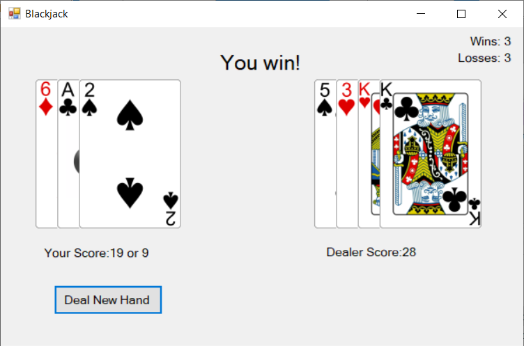
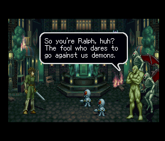

My Projects
UNI Title Editor
Program for use with the games Under Night In-Birth and Under Night In-Birth 2 that edits your in-game title.RWBY Team Name Generator
Program that generates all possible combinations and orderings of letters to make up a RWBY-style team name using first and last names.FE Fates Support Tracker
Helper page for Fire Emblem Fates that lets players track support points as they proceed through a chapter.Simple Mock Computer
Simple computer created in Logisim. Also includes a simple assembler that converts limited MIPS Assembly to binary code.C# Blackjack
Blackjack card game. Coded in C# to practice learning the language as well as using GUI.
The Adventure of Little Ralph English Patch
Patch for the PlayStation 1 game The Adventure of Little Ralph that
translates the game's text into English. Involved the insertion of MIPS Assembly code, use of Ghidra and debugging software, and parsing/insertion programs written in C++ and Python (click here to see said programs).